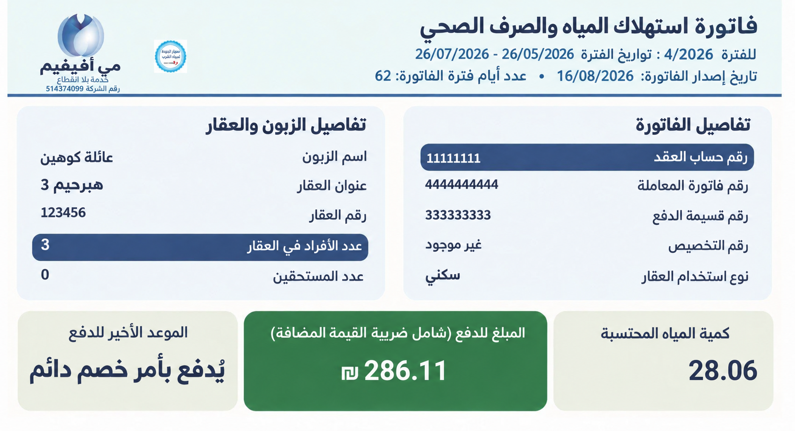
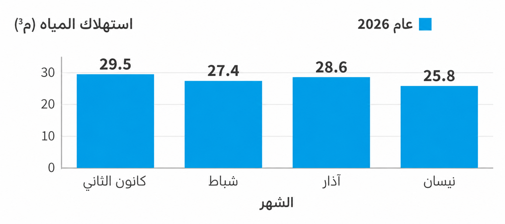
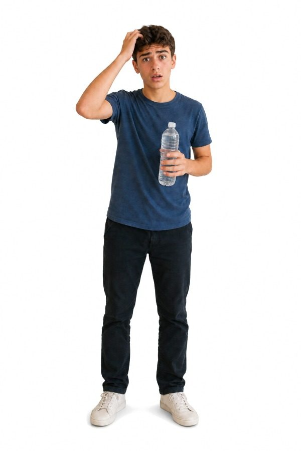
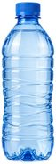

حان وقت 3 أسئلة متقدمة
ومفاجآت مثيرة أخرى...
(هذا يعني أننا تقدّمنا في المستوى)
في معظم دول العالم، ومنها إسرائيل، يُستخدم النظام المتري للقياس.
أما في الولايات المتحدة الأمريكية، فلا يزال يُستخدم في الغالب نظام قياس آخر.
باحث أمريكي وباحثة إسرائيلية يريدان التعاون في بحث حول تحلية المياه.
لماذا يُعدّ استخدام نظام قياس موحّد شرطًا مهمًا للبحث المشترك والموثوق؟
في مستودع صيدلية، تظهر ثلاث تسميات على وعاء الدواء السائل نفسه:
"0.5 لتر"، "500 مل"، "500 سم³".
يخشى مدير المستودع أن يتعلق الأمر بثلاث كميات مختلفة.
ما الصحيح الذي يمكن قوله؟
أمامكم مقطع من فاتورة المياه لعائلة حداد.
أ. اختاروا وحدة القياس المناسبة في المكان المحدد.

أمامكم رسم بياني لبيانات الاستهلاك من فاتورة المياه لعائلة حداد.
ب. هل يمكن الادعاء بأن استهلاك المياه لعائلة حداد مستقر نسبيًا على مدار فترات الفوترة الأربع في عام 2026؟

هل تعلم؟
متوسط استهلاك المياه للفرد في إسرائيل هو نحو 165 لترًا في اليوم.


كيف يمكن أن يكون هذا؟؟
أمامكم مخطط يُظهر توزيع متوسط الاستهلاك اليومي للمياه لشخص واحد في إسرائيل باللترات (المجموع 165 لترًا).
انقروا على كل أجزاء الرسم البياني لاكتشاف أي فئة يمثلها كل رقم:
الاستحمام والاغتسال
شطف المرحاض
المطبخ: الشرب، والطهي
وغسل الأواني
حوض الحمام
غسيل الملابس
تنسيق الحدائق وغسيل السيارة